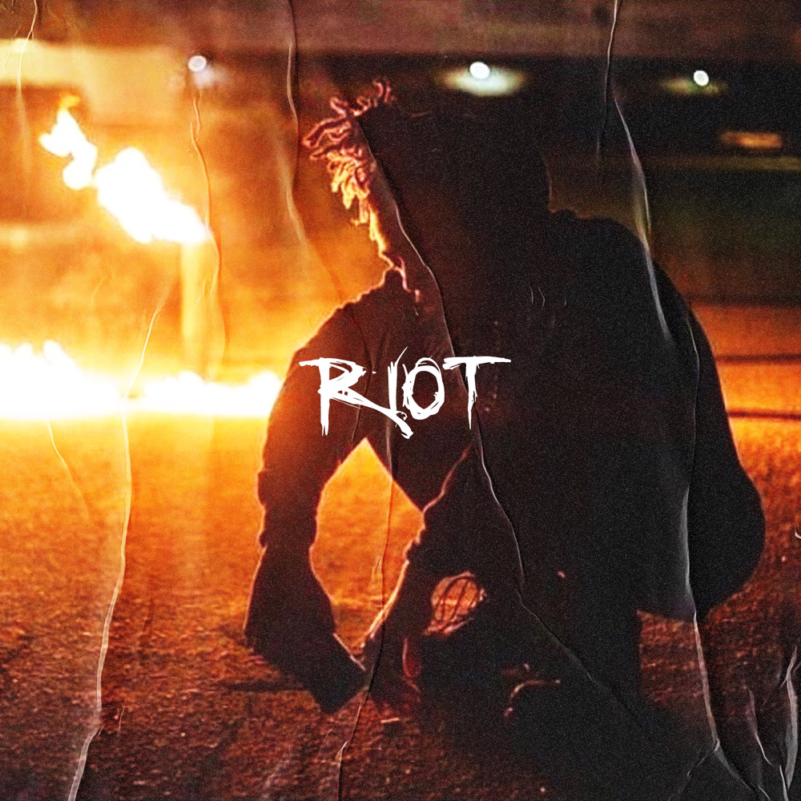

The GOAT
His discography speaks for itself. He could go from conscious songs like "Riot" where he talks about race relations in America, a revolution and the etiquette of a riot, to "Save Me" where he’s singing his heart out like it’s a ballad in a chorus that’s reminiscent of a 70’s rock ballad, to songs like up like an "Insomniac" where he talks about feeding girls Xanax for dinner while incorporating enough flows to make Biggie Smalls proud.
 He created a sound that embraces the versatility in current hip hop. Through that sound he cultivated a cult like fan base that made him the most streamed artist frequently even though he received no radio play until his untimely death.
XXXTentacion spoke about topics that are hard to talk about and he did this through music, he touched a lot of peoples lives including mine.
"I'm sadder than most of you with the money and the freedom" - XXXTentacionHis discography
DiscographyMy favorite album
17 Album
01/23/1998 - 06/28/18